Hello! I'm
Calvin Kwon
![Calvin Kwon]()
About Me
I'm a mechanical engineering student who likes building things that have to actually work — under load, under pressure, or in zero gravity.
I'm certified in Autodesk Inventor and work regularly in Solidworks and MATLAB, with hands-on shop experience in 3D printing (Bambu) and laser cutting/engraving. Outside the lab, I've spent several years teaching math, engineering fundamentals, and cello. Feel free to scroll down to learn more about my projects and my hobbies!
- Aerospace payload & systems design
- Mechanical design & CAD prototyping
- Underwater robotics & fluid systems
- Teaching & making technical ideas clear
Projects [Click on each one!]
Micro-gravity Nanolab
2U payload — fluid dynamics research
VIEW PROJECT →High-Altitude Microplastics Collector
National student challenge
VIEW PROJECT →Underwater ROV
U.S. Navy SeaPerch — NY/NJ Regional
VIEW PROJECT →RC Plane
Custom built — funded by Bergen Makerspace
VIEW PROJECT →Micro-gravity Nanolab
2U payload — fluid dynamics research
Goal & Constraints
In microgravity, water moves unpredictably through porous materials. That makes passive, uniform delivery to plant roots impossible to rely on, which is a real obstacle to space-based crop production on long-duration missions. Our task was to design, build, and test a fully functional 2U Nanolab.
The experiment was fixed in a 20×10×10 cm box. Inside it we needed more than two sensors, a way to detect fluid within the substrate, onboard water storage, water that could be recirculated rather than spent, USB data transmission, and a camera with a clear view of the medium. Everything had to function without gravity and be under a budget.
My Role
Lead team engineer. I directed the overall design and owned the mechanical side — the housing and the fluid-handling assembly — iterating through CAD revisions in Inventor to fit pumps, sensors, lighting, and structural supports inside the 2U envelope. I also developed custom PCBs to control the electronics and track water movement, and ran our meetings with NASA researchers, who reviewed our prototypes throughout.
Design & Iteration
The central problem was moving water both into and out of the substrate so it could be reused continuously.
Prototype 1 relied on capillary action alone to wick water in and out of a container. It was elegant but gave us no control over rate or distribution. Prototype 2 pumped water in and wicked it out, which solved delivery but not recovery. Prototype 3 pumped in both directions, observed the medium with a camera, and used capacitors to estimate flow rate in the lines. We moved to peristaltic pumps here, since conventional pumps rely on gravity-fed priming and behave unpredictably in freefall.
Several ideas were tested and rejected along the way. Capacitive sensing to measure water concentration was dropped because the sensors were far too large for the envelope and measured the wrong thing — we needed dispersion, not total water content. A pressure-maintaining water bladder overcomplicated the fluid loop for little gain. A homemade optical flow sensor failed because the silicone tubing was not transparent enough to read through, and fluorescent dye was ruled out on cost.
Prototype 4 was the turning point. After presenting our progress to NASA researchers, the feedback was that the system had become too complex — and the drop-test method we used to simulate microgravity limited what we could realistically validate. We narrowed the objective to delivering water into the substrate and observing it well, rather than attempting a full closed loop.
Prototype 5 used a peristaltic pump feeding a distribution housing that spread water evenly across the substrate, a camera and dedicated lighting to make the medium visible, lightly dyed water to improve contrast, and temperature and humidity sensors. Prototype 6 refined it: better mounts for the sensors, lights, wiring, and camera, and a case with a simple open-and-close system for servicing.
Testing
We validated sealing and fluid behavior through ground testing, and used drop tests to approximate microgravity and observe how water actually moved through each candidate medium. Each round fed the next revision — the pivot at Prototype 4 came directly out of what testing and review told us was achievable.
Outcome
We pitched the prototype and presented our experimental findings at Rutgers University, then developed and presented a refined prototype to a NASA HUNCH panel at Johnson Space Center in Houston. The project was named a National Design and Prototype Finalist.
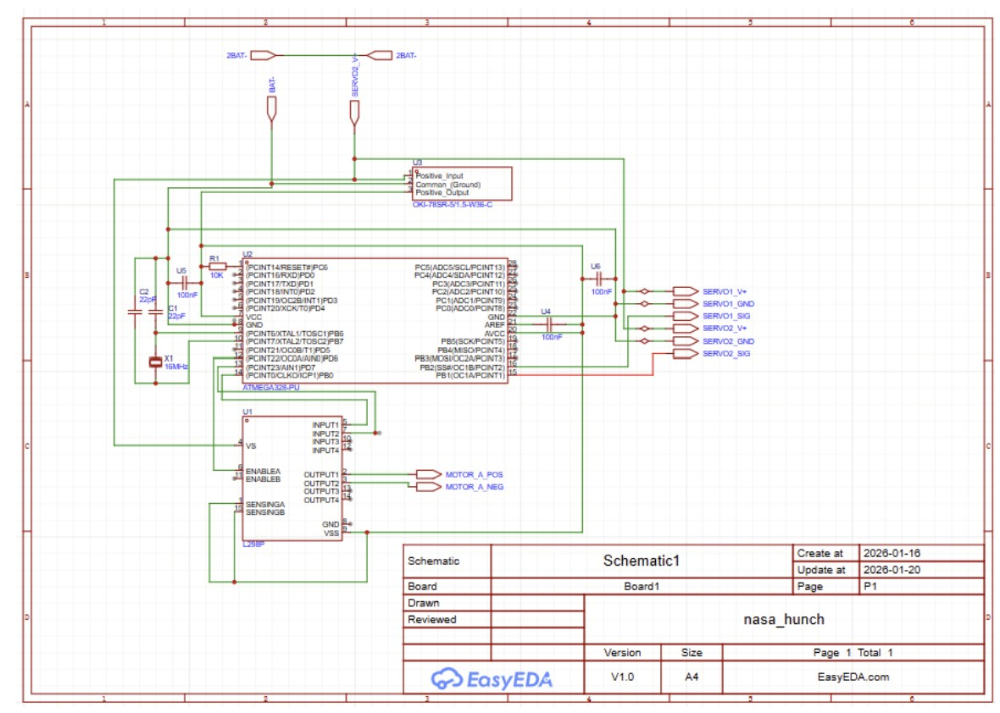
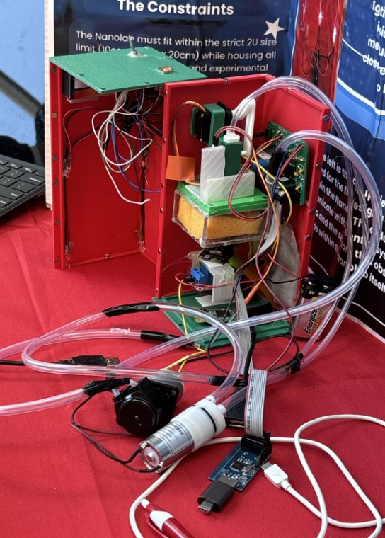
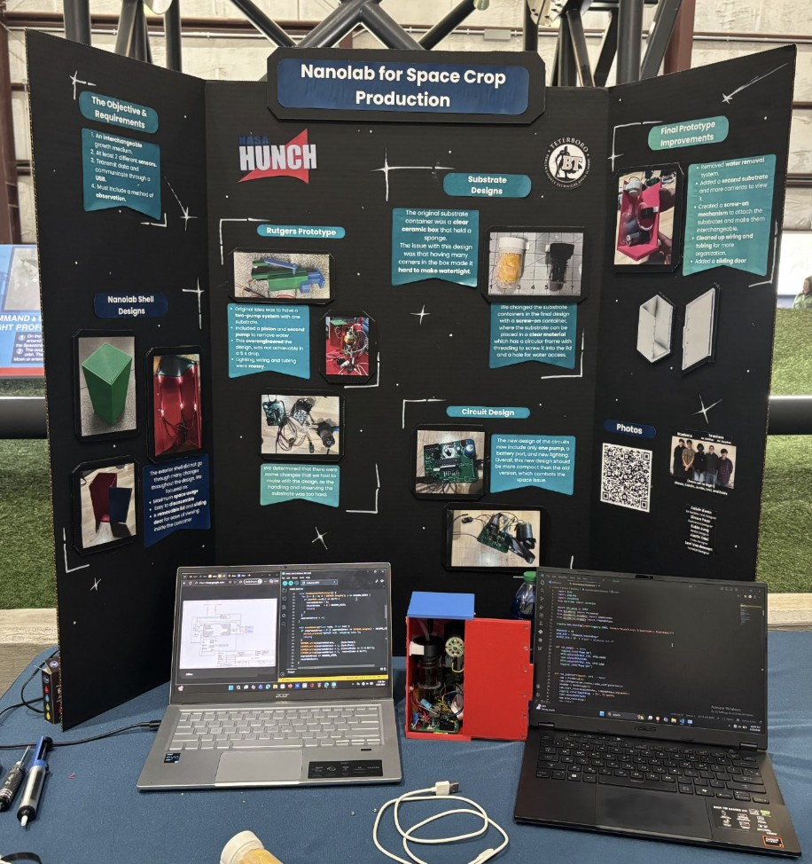
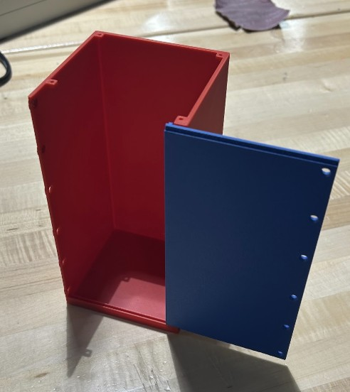
High-Altitude Microplastics Collector
National student challenge
Goal & Constraints
Microplastics are well documented at ground level, but far less is known about how far they travel upward. Aircraft and spacecraft emissions can leave particulates behind in the upper atmosphere, and we wanted to measure how microplastic frequency changes with altitude. Our original proposal set out to measure density; early on we narrowed it to frequency, which was the question we could actually answer with a single flight.
The payload had to fit inside the provided TechRise flight box and stay under 1000 g. Only the front and bottom faces had environmental access, and one of the four side panels had to stay clear as a removable access panel, so all mounting was limited to three. Every component ran at 3.3V, 5V, or 9V within a fixed current budget, every electrical connection was soldered, and all headers and fasteners were staked with epoxy. There was one flight and no way to touch the payload after shipping.
My Role
I worked on the mechanical side of the build. I designed and 3D-printed custom hardware for the payload, planned and built the mounting so every component fit within the three usable panels and stayed accessible for troubleshooting, and handled wiring and soldering — passing the soldering assessment, soldering header pins and connections across the components, and checking the assembled wiring against our diagrams.
Design & Iteration
The core problem was capturing air at altitude, where there is very little of it to move. A conventional air pump was one of the first things we ruled out — there simply is not enough air density in the upper stratosphere for it to be effective. We switched to a pump that traps air instead, which worked far better in thin atmosphere.
We also moved away from an early concept of a single conveyor belt of filters, which was mechanically complex and gave us one shared path for every sample. Instead we built multiple independent pathways, each with its own filter set, and used solenoid valves to redirect airflow to a different filter at each altitude band. Insulation was cut once we determined the flight box would fluctuate in temperature on its own.
The flight sequence ran off altitude rather than a timer: the pump and a new valve opened for five minutes at 10,000, 20,000, 30,000, 40,000, and 50,000 feet, and the pump shut down permanently at 70,000 feet. That gave each filter a discrete altitude band to itself.
Testing
Each component was soldered and tested individually before it was allowed into the assembly, with wiring, code, and serial output documented for every one. We then ran the full payload against the World View simulator twice — once connected to the editor to catch anything damaged during mounting, and once disconnected, which more closely matches how the payload behaves powered from the balloon and tends to expose wiring and power bus mistakes.
Outcome
The payload launched June 16, 2025 from Page, Arizona aboard a World View high-altitude balloon, flying roughly five and a half hours in the stratosphere above 70,000 feet alongside experiments from 59 other schools. We were 1 of 60 teams selected nationally out of more than 720 applicants, and delivered a live virtual presentation of our design and flight data to an audience of over 220.
The data did not survive. The payload was damaged in transit on the way back, and dirt worked its way into the tubing on landing and contaminated the filters, which cost us the analysis and the research paper we had planned to write from it. Almost all of it was avoidable. We had not sealed the filter housings tightly enough, our internal layout left components and tubing more exposed than they needed to be, and we never seriously considered ground contamination at recovery — we designed for the flight and not for the landing. The clearest lesson was that the experiment does not end at apogee, and that the hours we lost to disorganized assembly late in the schedule were the same hours we needed for sealing and packaging.
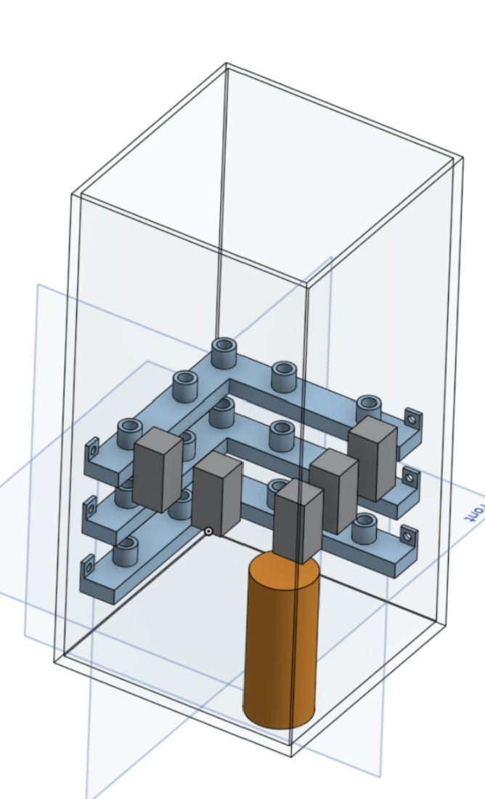
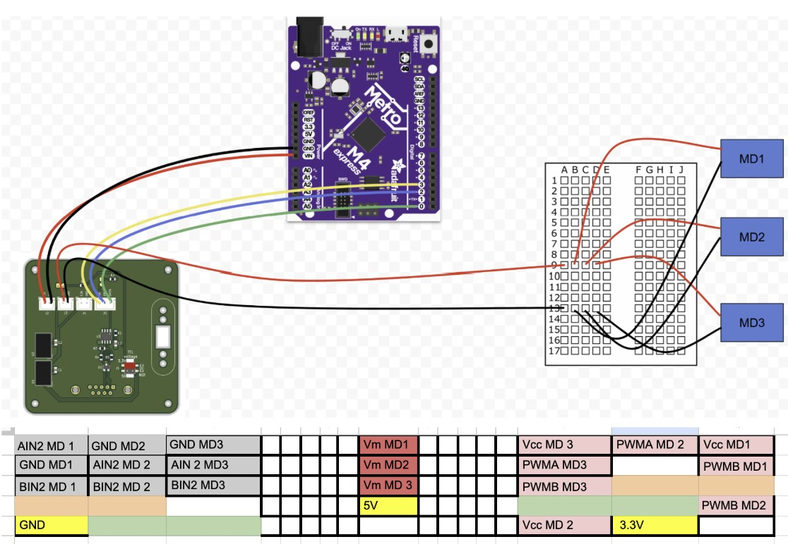
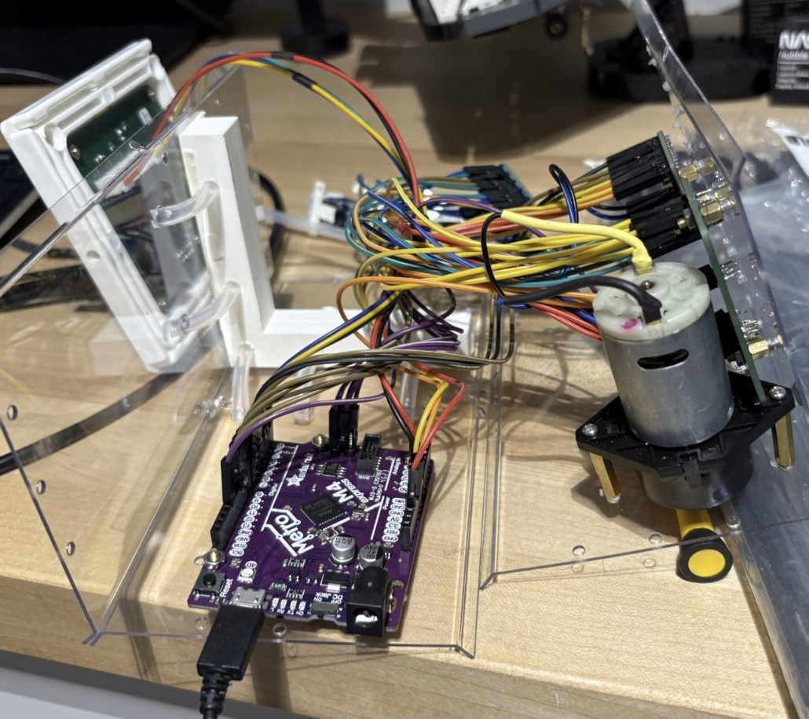
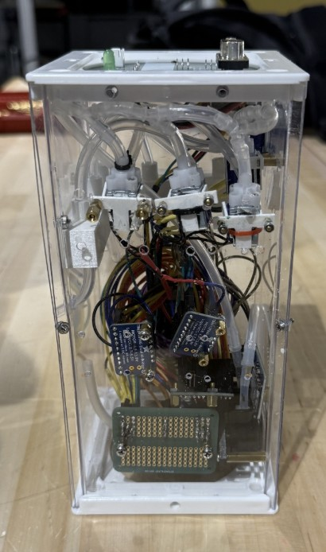
Underwater ROV
U.S. Navy SeaPerch — NY/NJ Regional
Built and piloted a remotely operated underwater vehicle for the regional SeaPerch competition. Designed the frame and buoyancy layout to balance stability with maneuverability, handled the control-side wiring and waterproofing for the tether and thrusters, then piloted the finished ROV through the competition's timed obstacle and task course.
RC Plane
Custom built — funded by Bergen Makerspace
Overview
A remote-controlled aircraft built from scratch, designed and flown over roughly three months. It runs on an 11.1V LiPo battery driving a brushless motor, with four servos for control — two in the wings for the ailerons and two in the tail for the elevator — fed through a receiver and flight controller. Nothing about it came from a kit: every dimension, ratio, and part placement was something I had to decide and then find out whether I had decided correctly.
Sizing & Analysis
The first month went entirely into proportions — wing area against fuselage length, the size and placement of the vertical and horizontal stabilizers, and where each sat along the body. I had no access to professional simulation software, so I worked from published RC aircraft design papers and an online wing cube loading calculator: weight divided by wing area raised to the 1.5 power, which unlike plain wing loading is comparable across aircraft of different sizes. The resulting number falls into bands — roughly 4 to 7 for park flyers, 7 to 10 for trainers and sport models, higher for aerobatic and scale aircraft — which let me target the handling I actually wanted before cutting anything.
The calculator narrowed the range but it could not tell me what would fly. Most of the real answers came out of the month of testing that followed.
Build & Iteration
I built in the foam board used for most scratch-built RC aircraft, and spent the second month gliding airframes to see which ratios held up.
The fuselage went through three versions. The first was strictly rectangular; later ones kept the sharp edges but were trimmed and tapered, with enough internal volume for the battery, wiring, and motor mount.
The wing was the hard part. I started with 10 degrees of dihedral, which turned out to be far too much — the aircraft was over-corrected and sluggish in roll. Rebuilding it flat swung it the other way and left it slightly unstable. I added a KFm airfoil and tried both KFm-1 and KFm-2; KFm-2 won, partly on performance and partly because it was the simplest to build repeatably without introducing inconsistencies along the step. Wing attachment went through rubber bands, adhesive, and both together before I settled on adhesive alone as the simplest thing that held.
By the sixth iteration it glided cleanly, so I moved to powered flight. The aileron servos went into the wings toward the leading edge, where the KFm-2 step let them sit flush without interrupting the airfoil — one of the unplanned advantages of that profile. The other two went into the tail for the elevator. With a large wing, I prioritised roll authority over pitch. Then I calibrated the controller and took it out.
Outcome
It flew. I ran two test flights, added landing gear and made repairs between them, then flew it a third time and put it into a tree.
That ended the airframe — flying it again would mean buying new parts. But the aircraft worked, which was the point. What I took from it was less about aerodynamics than about running something end to end on my own: sizing it, being wrong, rebuilding it six times, and applying coursework to a problem nobody had set up for me in advance.
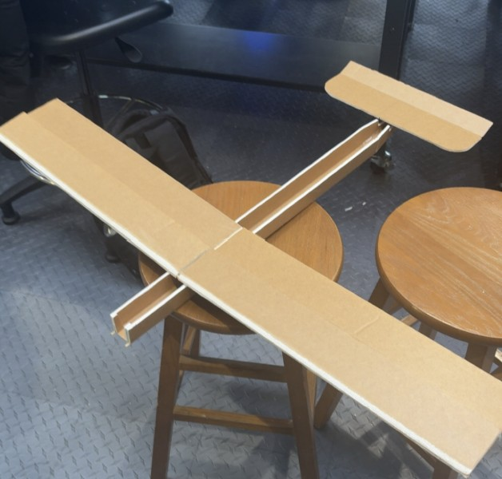
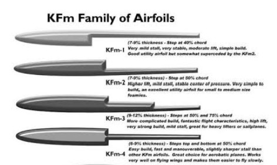
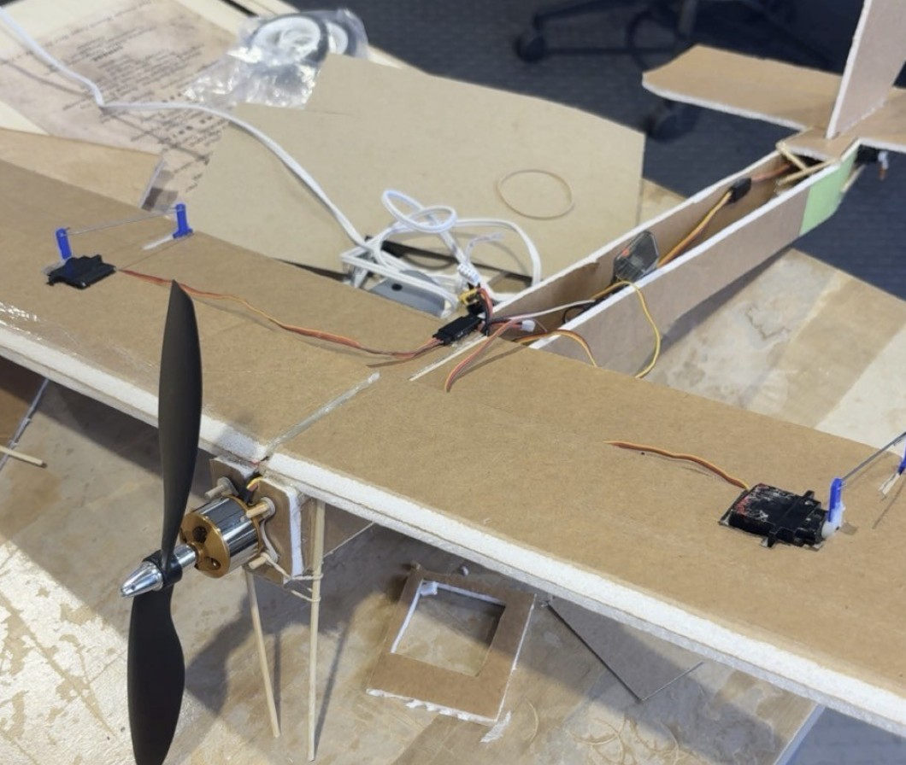
Some of my favorite movies at the moment.
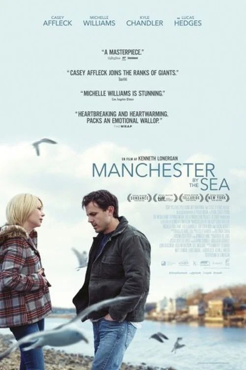
ADDCOVER
Manchester by the Sea
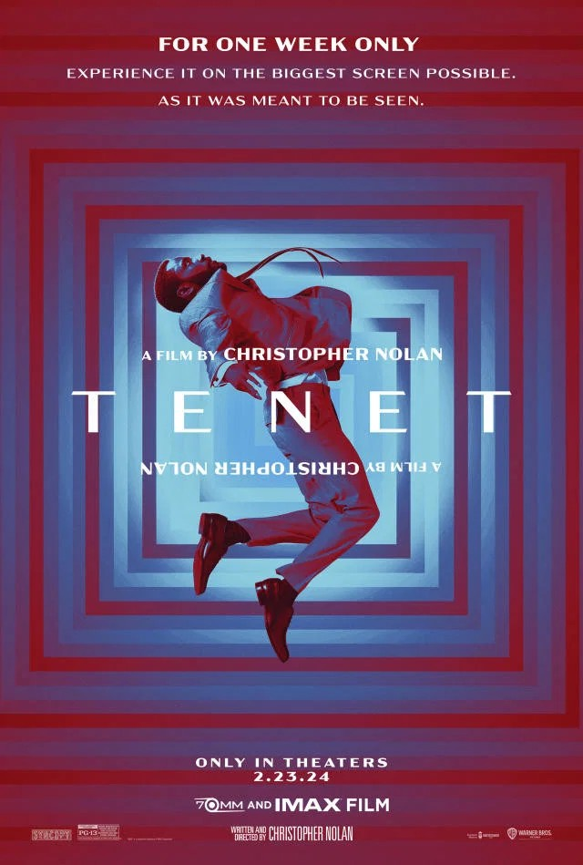
ADDCOVER
Tenet
COVER
Blade Runner 2049
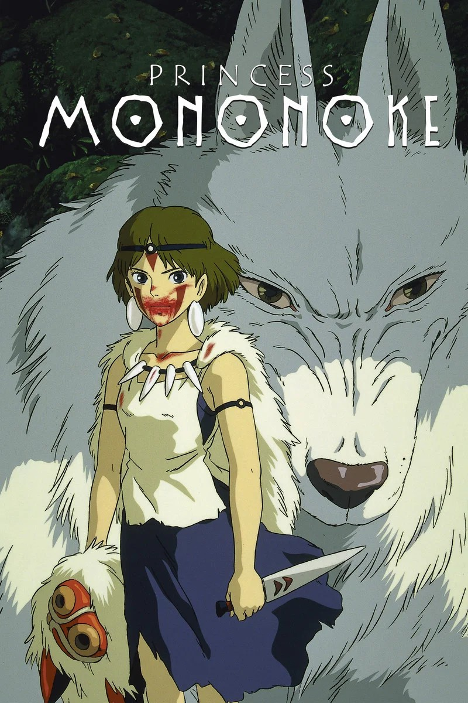
ADDCOVER
Princess Mononoke
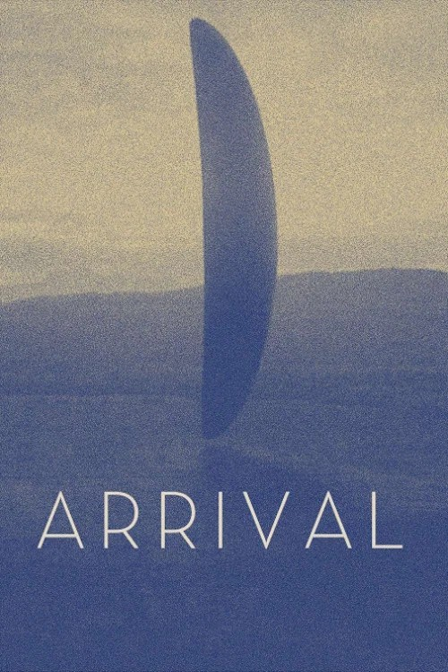
ADDCOVER
Arrival
Shows I've been watching and would recommend.
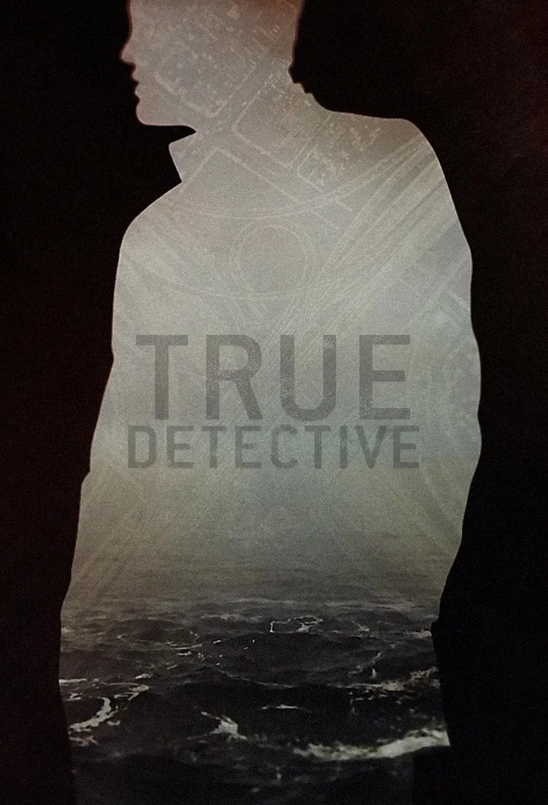
ADDCOVER
True Detective
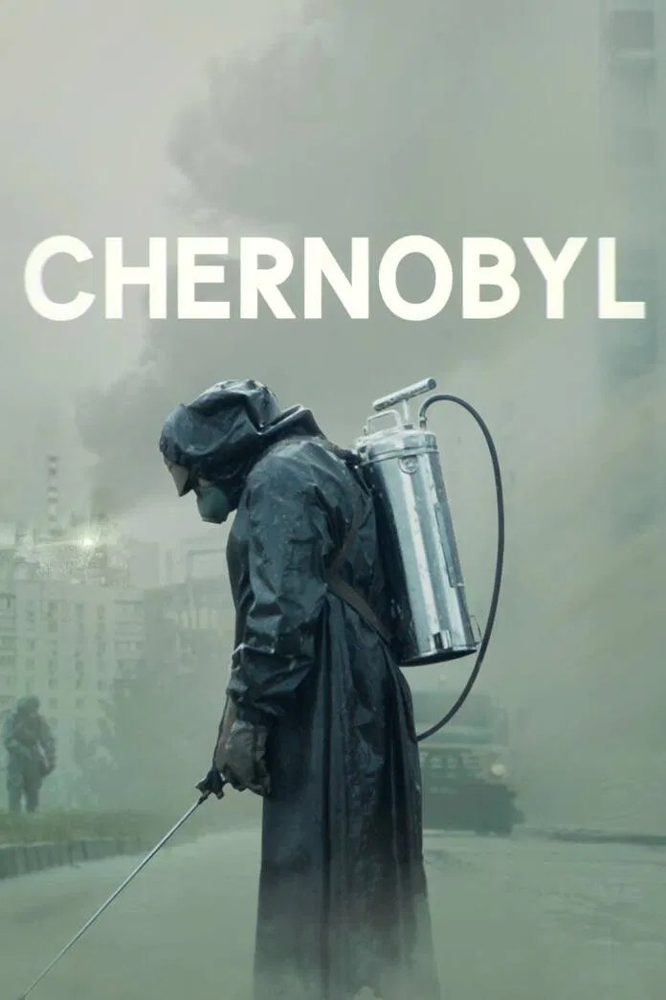
ADDCOVER
Chernobyl
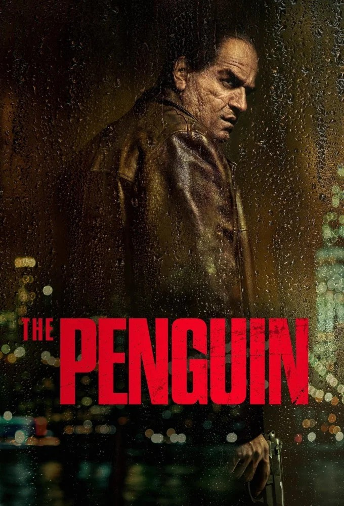
ADDCOVER
The Penguin
COVER
Jujutsu Kaisen
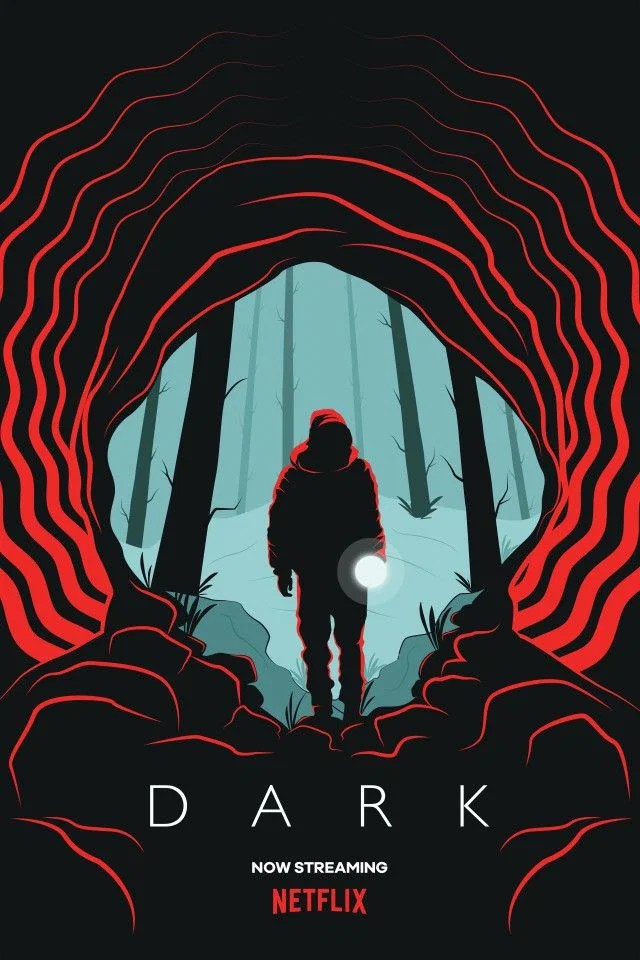
ADDCOVER
Dark
Recordings from recitals and performances I've played in.